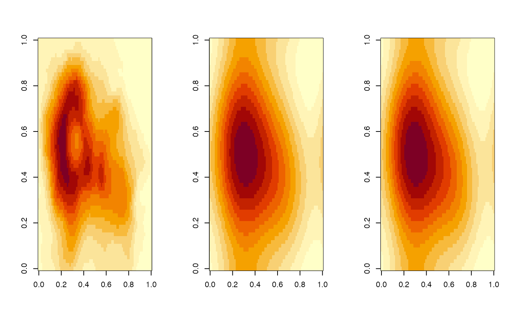

The function step_blur() creates a specification of a recipe
step that will induce Gaussian blur in numerical arrays. The input and
output must be list-columns.
step_blur(
recipe,
...,
role = NA_character_,
trained = FALSE,
xmin = 0,
xmax = 1,
blur_sigmas = NULL,
skip = FALSE,
id = rand_id("blur")
)A recipe object. The step will be added to the sequence of operations for this recipe.
One or more selector functions to choose variables for this step.
See selections() for more details.
For model terms created by this step, what analysis role should they be assigned? By default, the new columns created by this step from the original variables will be used as predictors in a model.
A logical to indicate if the quantities for preprocessing have been estimated.
Parameters passed to blur().
A logical. Should the step be skipped when the recipe is baked by
bake()? While all operations are baked when prep() is run, some
operations may not be able to be conducted on new data (e.g. processing the
outcome variable(s)). Care should be taken when using skip = TRUE as it
may affect the computations for subsequent operations.
A character string that is unique to this step to identify it.
An updated version of recipe with the new step added to the
sequence of any existing operations.
The gaussian blur step deploys blur(). See there for definitions
and references.
TODO: Explain the importance of blur for PH of image data.
This step has 1 tuning parameter(s):
blur_sigmas: Gaussian Blur std. dev.s (type: double, default: NULL)
topos <- data.frame(pix = I(list(volcano)))
blur_rec <- recipe(~ ., data = topos) %>% step_blur(pix)
blur_prep <- prep(blur_rec, training = topos)
blur_res <- bake(blur_prep, topos)
tidy(blur_rec, number = 1)
#> # A tibble: 1 × 3
#> terms value id
#> <chr> <dbl> <chr>
#> 1 pix NA blur_4yCRh
tidy(blur_prep, number = 1)
#> # A tibble: 1 × 3
#> terms value id
#> <chr> <dbl> <chr>
#> 1 pix NA blur_4yCRh
with_sigmas <- recipe(~ ., data = topos) %>% step_blur(pix, blur_sigmas = 10)
with_sigmas <- bake(prep(with_sigmas, training = topos), topos)
ops <- par(mfrow = c(1, 3))
image(topos$pix[[1]])
image(blur_res$pix[[1]])
image(with_sigmas$pix[[1]])

par(mfrow = ops$mfrow)